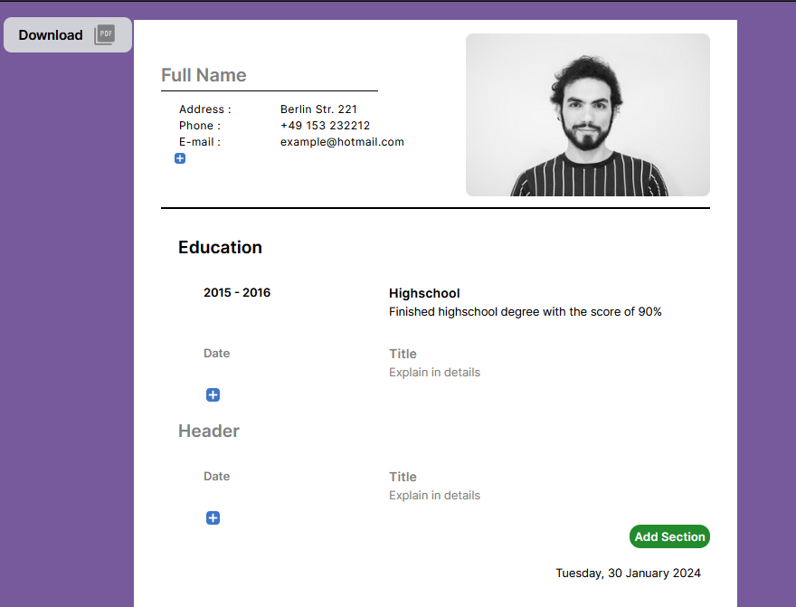

Interactive Resumes with React
Created an intuitive Application Creator web tool, allowing users to effortlessly input personal information, select a profile picture, and generate a downloadable PDF resume.
The live website provides a user-friendly interface where users can easily fill in their details, add or remove information sections, and customize the content of their application. The dynamic interface allows for flexibility, enabling users to control the amount of information displayed.
The application data is stored locally in the user's web browser using local storage, ensuring that entered information is retained even if the browser is accidentally closed or experiences unexpected issues.
Examples below showcase the versatility of the tool, including adding and removing personal information, managing sections, updating the profile picture, and finally, downloading the completed application as a PDF.